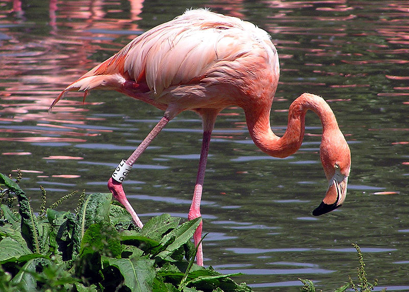

Стояние на одной ноге фламинго, аисты и другие длинноногие птицы используют, чтобы максимально уменьшить потерю тепла при ветре. Эта потеря через непокрытые перьями ноги из-за их невыгодного соотношения объёма к поверхности достаточно велика, поэтому птицы пытаются держать ноги поочерёдно в тепле хорошо изолированного оперения. Что со стороны кажется крайне неудобной и трудной позой, от фламинго не требует абсолютно никаких усилий. Специальное физиологическое приспособление предотвращает сгибание опорной ноги, из-за чего нога остаётся вытянутой даже без применения мускульной силы. Схожий механизм не даёт птице упасть с ветки, если она заснула. Когда птица взбирается на ветку и, садясь, сгибает ноги, сухожилия натягиваются и сгибают пальцы ног, которые плотно обхватывают ветку.
